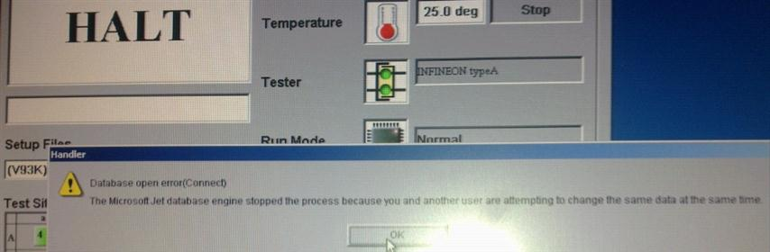
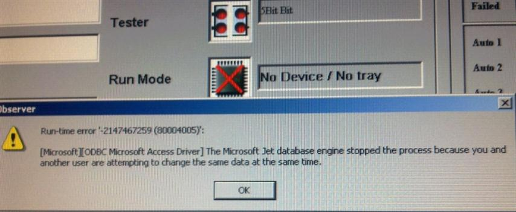

Service History
Subject: NS-8040 during HMI loading, Database open error(connect), ODBC error
Handler Model: NS-8040(NS-005, S/N: 181669)
Controller: RC520
Date: 29 Oct 2010
Symptom
During HMI loading, Database open error(connect) - ODBC error.
Open Observer Data, encounter Runtime error for Microsoft jet data data base engine


Action
-Backup data by BackupSan
-HDD Recovery by NS8000 Recovery CD Version(FD08S120)
-Upgrade HMI to F10.14-SIS
-Restore data backup by BackupSan
-Cycle run handler
Remarks: email from Hidaka-san on 4 Nov, ODBC error due to corrupted database
It is possible for us to inspect as follows;
- Close the HMI
- Remove the below files to the other folder
NS8000/Env/Handler.mdb
NS8000/Env/Handler.mdb.dsn
- Re-install HMI software ( It will be installed initial database.)
-Execute HMI
- Check the condition (It has any error or not.)
If the problem is disappeared after the above process, the database is broken.
In this case, it is very difficult for us to recover the event log or other data.
Note: The broken database: It may have occurred when handler power off during database accessing.
Re-install HMI software.
Copy from the other handler.
NS8000/Env/Handler.mdb
NS8000/Env/Handler.mdb.dsn
It seems to be better than re-install HMI.
Cause
Handler database corrupted.